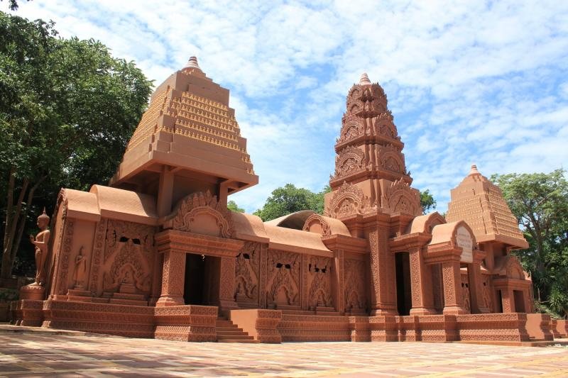

สะพานข้ามแม่น้ำแคว
หนึ่งในจุดท่องเที่ยวที่เรานึกถึงเป็นลำดับต้นๆ คงหนีไม่พ้นก็คือ สะพานข้ามแม่น้ำแคว ทางรถไฟที่ดูแข็งแกร่ง ทอดตัวยาวข้ามแม่น้ำประมาณ 300 เมตร แลนด์มาร์คของเมืองกาญจน์ ดูช่างเป็นงานก่อสร้างที่น่าภาคภูมิใจ แต่เบื้องหลังของมันนั้น กลับต้องแลกมาด้วยชีวิตของผู้คนอย่างมหาศาลในช่วงสงครามโลกครั้งที่ 2
อุทยานประวัติศาสตร์เมืองสิงห์
อุทยานประวัติศาสตร์เมืองสิงห์เป็นหนึ่งในอุทยานประวัติศาสตร์ของประเทศไทยตั้งอยู่บนฝั่งแม่น้ำแควน้อยทางทิศเหนือใน เขตตำบลสิงห์ อำเภอไทรโยค จังหวัดกาญจนบุรีแวดล้อมด้วยทิวเขาเป็นแนวยาวอยู่โดยรอบ

ประตูเมืองกาญจนบุรี
ประตูเมืองกาญจนบุรี เปิดให้นักท่องเที่ยวและประชาชนเยี่ยมชมทุกวัน และบริเวณท่าน้ำ ห่างจากประตูเมืองกาญจนบุรี ประมาณ 200 เมตร มีร้านอาหารและร้านก๋วยเตี๋ยวเรือบริการนักท่องเที่ยว

ตลาดน้ำกองถ่ายฯ ค่ายสุรสีห์
ตลาดน้ำกองถ่ายฯ ค่ายสุรสีห์ เดิมเป็นสถานที่ถ่ายทำภาพยนตร์ตำนานสมเด็จพระนเรศวรมหาราช ต่อมากองพลทหารราบที่ 9 ได้นำพื้นที่กองถ่ายฯเดิม มาพัฒนาและปรับปรุงให้เป็นตลาดน้ำแบบย้อนยุค เป็นตลาดน้ำแห่งแรกและแห่งเดียวของจังหวัดกาญจนบุรี

พิพิธภัณฑสถานแห่งชาติบ้านเก่า
พิพิธภัณฑสถานแห่งชาติบ้านเก่าจัดตั้งขึ้นในปี พ.ศ. 2508 เกิดขึ้นจากคณะสำรวจก่อนประวัติศาสตร์โครงการความร่วมมือทางโบราณคดีระหว่างไทย-เดนมาร์ก ได้ทำการศึกษาขุดค้นแหล่งโบราณคดีบ้านเก่า บริเวณที่ดินของนายลือ-นายบาง เหลืองแดง บริเวณริมแม่น้ำแควน้อย พบโบราณวัตถุสมัยก่อนประวัติศาสตร์จำนวนมาก จึงนำมากจัดแสดง

เมืองบาดาล วัดวังก์วิเวการามเก่า
วัดวังก์วิเวการาม หรือ วัดหลวงพ่ออุตตมะ เป็นวัดที่หลวงพ่ออุตตมะ ร่วมกับชาวบ้านอพยพชาวกะเหรี่ยงและชาวมอญ ได้ร่วมกันสร้างขึ้น ในปี พ.ศ. 2496 ที่บ้านวังกะล่าง อำเภอสังขละบุรี จังหวัดกาญจนบุรี ตั้งอยู่บนเนินสูงในบริเวณที่เรียกว่า สามประสบ ซึ่งเป็นจุดที่แม่น้ำ 3 สาย คือแม่น้ำซองกาเลีย แม่น้ำบีคลี่ แม่น้ำรันตี ไหลมาบรรจบกัน
เมืองมัลลิกา ร.ศ. ๑๒๔
เมืองมัลลิกา เป็นเมืองย้อนยุคของวิถีชีวิตชาวสยามบริเวณลุ่มแม่น้ำเจ้าพระยา ในสมัยพระบาทสมเด็จพระจุลจอมเกล้าเจ้าอยู่หัว รัชกาลที่ ๕ วิถีชีวิตของชาวสยามในยุค ร.ศ.๑๒๔ มีการเปลี่ยนแปลงเกิดขึ้นมากมายหลายด้าน ที่เด่นชัดมากคือการประกาศเลิกทาส

ElephantsWorld
หรือบ้าน ช.ช้างชรา เป็นสถานที่ท่องเที่ยวสไตล์ “จิตอาสา” ของคนมีหัวใจรักช้าง อยากไปดูแลสัตว์ร่วมโลกอย่างใกล้ชิด

วัดถ้ำพุหว้า
วัดถ้ำพุหว้า ตั้งอยู่ที่ตำบลหนองหญ้า อำเภอเมือง จังหวัดกาญจนบุรี ตัววัดเป็นศิลปะแบบขอมประยุกต์ที่สวยงาม เป็นวัดป่าอยู่ในอ้อม กอดของขุนเขามีบรรยากาศร่มรื่น เงียบสงบเหมาะแก่การวิปัสสนาและสงบจิตใจ
